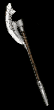

|

破骨
食人魔之斧
Bonehew
Ogre Axe
|
雙手傷害:
(103-117) - (536-609)
(變動) (平均傷害341)
須要等級: 64
須要的力量點數: 195
須要的敏捷點數: 75
耐久度: 50
基本武器速度: [0]
+270-320% 增強傷害
(變動)
等級14屍體爆炸 (30 聚氣)
防止怪物自療
30% 提升攻擊速度
擊中敵人時有50%機會施展等級16骨矛
有凹槽 (2) |
|

死神的喪鐘
銳利之斧
The Reaper's Toll
Thresher
|
雙手傷害:
(34-40) - (408-479)
(變動) (平均傷害240)
須要等級: 75
須要的力量點數: 114
須要的敏捷點數: 89
耐久度: 65
基本武器速度: [-10]
+190-240% 增強傷害
(變動)
忽視目標防禦力
增加 4-44 冰冷傷害
11-15% 生命於擊中時偷取
(變動)
33% 機率出現致命攻擊
擊中敵人時有33%機會施展等級1衰老
需求 -25%
(限天梯) |
|

盜墓者
神秘之斧
Tomb Reaver
Cryptic Axe
|
雙手傷害:
(99-125) - (450-570)
(變動)
(平均傷害310)
須要等級: 84
須要的力量點數: 165
須要的敏捷點數: 103
耐久度: 65
基本武器速度: [10]
+200-280% 增強傷害
(變動)
+150-230% 對不死生物的傷害
(變動)
+60% 提升攻擊速度
+250-350 對抗不死生物的攻擊準確率
(變動)
所有抗性 +30-50
(變動)
10% 復活為 復活的怪物
+10-14 生命值在殺死後獲得
(變動)
+50-80% 更加的機會取得魔法裝備
(變動)
+4 照亮範圍
有凹 (1-3)
(變動)
(限天梯) |
|

暴風尖塔
鮫尾巨斧
Stormspire
Giant Thresher
|
雙手傷害:
(100-140) - (285-399)
(變動) (平均傷害230)
等級需求: 70
力量需求: 34
武器基本速度: [20]
150-250% 增強傷害
(變動)
增加 1-237 閃電傷害
2% 機會被擊中時時附加等級20 充能彈
5% 機會被擊中時使用等級 5 連鎖閃電
30% 增加攻擊速度
抗閃電 +50%
+10 力量
攻擊者受到27閃電傷害
無法破壞
|